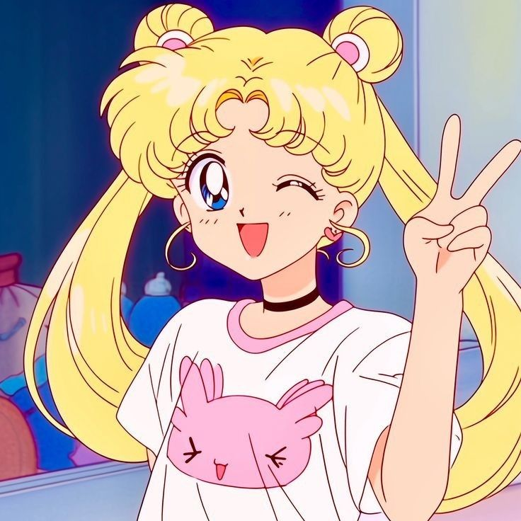

🌙 Sailor Moon
Aku suka sekali dengan Sailor Moon karena ceritanya penuh dengan persahabatan dan keberanian. Sejak kecil aku sudah sering menonton dan selalu kagum dengan kekuatan para Sailor Guardian. Karakter Usagi Tsukino yang ceria namun tetap tangguh membuatku semakin terinspirasi. Setiap transformasi dan pertarungan selalu terasa seru dan penuh warna. Sailor Moon bukan hanya hiburan, tetapi juga memberi semangat dalam menjalani hari-hari.
